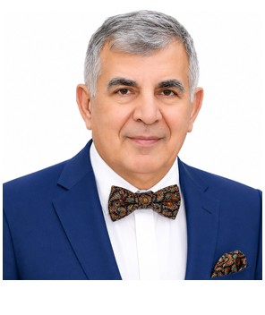

Profile
Emirullah Mehmedov is an emeritus professor and leading researcher at the Nanotechnology Research Center of Bilkent University, where he has worked since 2011. Publications use the name Amirullah M. Mamedov. He received a PhD in physics and mathematics from the Ioffe Institute in 1973. The thesis is on the optical and electro-optical properties of photoferroelectric materials and was carried out at the Vavilov State Optical Institute. He received the Doctor of Sciences in physics and mathematics in 1982 from the regional council in Riga, and the title of full professor of optics in 1988. Published more than 350 works. He was scientific advisor to ASELSAN in 1992–2006.
Work experience
NANOTAM, Bilkent University, Ankara, Turkey
2011–presentEmeritus professor and leading researcher
ASELSAN, Turkey
1992–2006Scientific advisor
- Microelectronics, guidance, and electro-optics division
SAVTAG, TÜBİTAK, and SATEM, Ministry of National Defence of Turkey
2004–2010Advisor
Çukurova University, Adana, Turkey
Professor of physics and of electrical and electronics engineering
Baku State University, Baku, Azerbaijan
Full professor and head of the Nonlinear Optics Division
Education
Full professor of optics
1988Supreme Attestation Committee of the USSR, Moscow
DSc
1982Physics and mathematics. Habilitation. Awarded in Riga
Regional council of the Supreme Attestation Committee of the USSR, Riga, Latvia
Associate professor of physics
1977Solid-state physics
USSR
PhD
1973Physics and mathematics. Thesis on optical and electro-optical properties of photoferroelectric materials. Work done at the Vavilov State Optical Institute
Ioffe Physical-Technical Institute, St. Petersburg, Russia
Research metrics
- Publications in international journals — More than 350 — Self-reported
Publications
Peer-reviewed journal articles
1. Modeling and Simulation of the Ferroelectric Based Micro-Gyroscope: FEM Analysis, Ferroelectrics, 447(1), 46, (2013)
2. 2D Anisotropic Photonic Crystals of Hollow Semiconductor Nanorod with Liquid Crystals, Applied Mechanics and Materials, 394(1), 38 (2013)
3. Electron Energy Loss Spectroscopy and the Electronic Band Structure of KNbO3 Ferroelectric, Ferroelectrics, 461(1), 1 (2014)
4. Mechanical, Electronic and Optical Properties of Bi2S3 and Bi2Se3 Compounds: first principle investigations, J. Molecular Modeling, 20(4), 2180 (2014)
5. Optical Properties of Metamaterial Based Devices Modulated by a Liquid Crystal, Appl. Phys. A, 117(2) (2014), 611
6. Ferroelectric Based Photonic Crystal Cavity by Liquid Crystal Infiltration, Integrated Ferroelectrics, 158(1), (2014) 1-12
7. Organic semiconductor-based photonic crystals for solar cell arrays: band gap and optical properties, J. Modern Opt. 161 (21), (2014) 1754
8. Band Gap and Optical Transmission in Fibonacci Type One Dimensional A5B6C7 Based Photonic Crystals, Phys. Stat.Sol.(c) 12(6), 540-544 (2015)
9. Dynamic Nonlinear Optical Processes in Some Oxygen-Octahedra Ferroelectrics: first principle calculations, Ferroelectrics, 483(1), 26-42 (2015)
10. Optical Properties of the Narrow-Band Ferroelectrics: first principle calculations, Ferroelectrics 483(1), 43-52 (2015)
11. Influence of Crown Margin Design on the Stress Distribution in Maxillary Canine Restored by All-ceramic Crown: A Finite Element Analysis, J. Korean Dent Sci., 8(1),28-35 (2015)
12. BaTiO3 and TeO2 based gyroscopes for guidance systems: FEM analysis, Ferroelectrics, 497(1), 15-23 (2016)
13. Phononic band gap and wave propagation on polyvinylidene fluoride-based acoustic metamaterials, Cogent Physics, 2, 1169570 (2016)
14. Topological Insulator Based Locally Resonant Phononic Crystals: Wave Propagation and Acoustic Band Gaps, Ferroelectrics, 499(1) 123-129 (2016)
15. AIBIIICVI2 (A=Cu, Ag; B=Ga, In; C=S, Se, Te) Based Photonic Crystal Superlattices: Optical Properties" Physica Status Solidi (C), 1600156 (2017)
16. Optical and Magnetic Properties of Some XMnSb and Co2YZ Compounds: ab initio calculations, Physica Status Solidi (C), 1600182 (2017)
17. Wave Propagation and Acoustic Band Gaps of Two-Dimensional Liquid Crystal/Solid Phononic Crystals, Appl. Phys. A, 123(1):23 (2017)
18. Spectral Scalability and Optical Spectra of Fractal Multilayer Structures: FDTD analysis, Appl. Phys. A, 123(1):33 (2017)
19. Band gap structure of elliptic rods in water for a 2D phononic crystal, Appl. Phys. A, 123 (3): 212 (2017)
20. Topological Insulators: Electronic Band Structure and Spectroscopy, J. Physics, Materials Science and Engineering, 175 (2017) 012004
21. Fracture of Femoral Neck: Analysis of New Implant Models with and without Slit by the FEM, Azerbaijan Medical Journal, iss.3, 12 (2017)
22. A5B6C7 Ferroelectrics as Novel Materials for Phononic Crystals, Ferroelectrics, 511 (1) 12, 2017
23. Bud Sümüyü Boynu Sınığı: Dəlikli və Dəliksiz Yeni Implant Modellerinin Sonlu Elementlər Üsülu ilə Təhlili, Azərbaycan Tibb Jurnalı 2017(3) s. 12
24. Fibonacci Sequences Quasiperiodic A5B6C7 Ferroelectric Based Photonic Crystal: FDTD analysis, Integrated Ferroelectrics, 2017
25. Wave Propagations in Metamaterial Based 2D Phononic Crystal: Finite Element Analysis, J. Physics, Materials Science and Engineering, 1045 (2018) 012034
26. Stress Distribution of a New Type of Perforated Implants in Femur Neck Fracture: Finite Element Model, J. Physics: Materials Science and Engineering, 1045 (2018) 012017
27. Electronic band structure of rare-earth ferroelastics: theoretical investigations, JOAM 20 (12) 69, 2018
28. Electronic, Mechanical, and Optical Properties of Ruddlesden-Popper Perovskite Sulfides: first principle calculation, Ferroelectrics, 535(1), 142 (2018)
29. Multiple Band gaps of a Ferroelectric Based 2D-Phononic crystal slab, Ferroelectrics, 535(1) 152 (2018)
30. Phononic Band Gap and Wave Propagation on multiferroic based acoustic metamaterials, Ferroelectrics, 2019, 539 (1) 84
31. Photonic Band Gap of Multiferroic-Dielectric Materials in the IR region: FDTD method, Ferroelectrics, 2019, 539(1) 50
32. Electronic properties of spin excitation in multiferroics with a spinel structure: First principles calculation, Ferroelectrics, 2019, 539 (1) 41
33. Electronic and Elastic Properties of the Multiferroic Crystals with the Kagome Type Lattices -Mn3V2O8 and Ni3V2O8: First Principle Calculations, Ferroelectrics, 544(1), 11, 2019
34. Two‐Dimensional Phononic Band structure of Archimedean-Logarithmic Spiral- Based Slabs Ferroelectrics, 544(1), 112, 2019
35. BaTiO3 Based Photonic Time Crystals and Momentum Stop -Bands, Ferroelectrics, 2020 557(1), 105
36. Complete Photonic Band Gaps in Sn2P2X6 (X=S, Se) Supercell Photonic Crystals, Ferroelectrics, 2020 557(1), 92
37. Band structure and transmission spectra in multiferroic based Sierpinski- carpet phononic crystal, European Physical J.- Applied Physics, 2020, 90(2)
38. Phononic Crystals with Archimedean-like Tiling: Band Structure and the Transformation of Sound, Integrated Ferroelectrics, 2021, 220(1)
39. Slater insulator phase of X2 (X = Na, Li)IrO3: First principles calculation, Integrated Ferroelectrics 2021, 220(1)
40. Second Harmonic Generation in Generalized Ferroelectric Superlattices, Integrated Ferroelectrics, 2021, 220(1)
41. Band structures of metacomposite based phononic crystals in quasi- Sierpinski fractals, EPITOANYAG-JOURNAL OF SILICATE BASED AND COMPOSITE MATERIALS, 2022, 74 (2)
42. Observation of shear bond strength between zirconia core and silica based composite material; a finite element analysis, EPITOANYAG-JOURNAL OF SILICATE BASED AND COMPOSITE MATERIALS, 2022, 74 (2)
43. SECOND HARMONIC GENERATION IN LOCALLY RESONANT NONLINEAR WEYL SEMIMETAL BASED ACOUSTIC METAMATERIALS: FINITE ELEMENT ANALYSIS, AJP, Fizika (C) 2023, 77
44. DIRAC CONE AND TOPOLOGICAL STATES IN 2D PHONONIC CRYSTALS, AJP, Fizika (C) 2023, p.71
45. TUNABLE PHONONIC WAVEGUIDE: FINITE ELEMENT ANALYSIS, AJP, Fizika (C) 2023,
46. Topological semimetals in the ZrB5 (B = Se, Te) material class: Weyl points and electronic properties, Ferroelectrics, 2024, 618 (4)
47. Observation of elastic Weyl points in ferroelectric based sonic metamaterials Ferroelectrics, 2024, 618 (4)
48. The structural, elastic, electronic, and optical properties of Li2RuO3 compound in different structures, Chinese Journal of Physics, 2024, 90, 1026
49. The structural, elastic, electronic, and optical properties of the rhombohedral La2NiMnO6 double perovskite compound at different temperatures, Comp. Cond. Matt., 2024, 41, e00984.
50. The structural, mechanical, electronic, and optical properties of multiferroic LiCu2O2 under different pressures, Bulletin of Materials Science, 2025, 48:6 Conferences (more than 50 international conferences, meetings and workshops; below are some conferences from 2012 up to now): inv. presentations Bilkent University
51. 21-st International Symposium on Applications of Ferroelectrics, ISAF2012, (2012, Portugal, Aveiro)
52. 11-th European Conference on Applications of Polar Dielectrics, ECAPD-11, (2012, Portugal, Aveiro)
53. 4-th Conference Piezoresponse Force Microscopy and Nanoscale Phenomena in Polar Materials, (2012, Portugal Aveiro)
54. International Ultrasonic Symposium (2013, Czech Republic, Prague)
55. International Symposium on the Applications of Ferroelectrics (2013, Czech Republic, Prague)
56. 13-th International Meeting on Ferroelectricity (2013, Poland, Katowice – Krakow)
57. International Conference “Novel Semiconductor Materials and Structures (2013, Azerbaijan, Baku)
58. International Conference on Mechatronics, Applied Mechanics and Energy Engineering - MAMEE 2013 (2013, Singapur).
59. 5th International Conference on Metamaterials, Photonic Crystals and Plasmonics, META – 2014, (2014, Singapur)
60. 19th International Conference on Ternary and Multinary Compounds, ICTMC19, (2014, Niigata Japan)
61. 12th Russia/CIS/Baltic/Japanese Symposium on Ferroelectricity, RCBJSF-2014, (2014, Riga Latvia)
62. 9th International Conference on Functional Materials and Nanotechnologies, 2014 –FM&NT, (2014, Riga, Latvia)
63. Science and Application of Thin Films, Conference and Exhibition, SATF2014, (2014, Izmir, Turkey)
64. International Organic Electronic Material Technologies Conference, OEMT 2015 (Elazığ, Turkey; 25-28 March, 2015)
65. 13-th European Meeting on Ferroelectricity, EMF-2015 (Porto, Portugal;28 June-03 July, 2015)
66. 13th Russia/CIS/Baltic/Japanese Symposium on Ferroelectricity, RCBJSF2016, (2016, Shimane, Japan)
67. 7th International Conference on Metamaterials, Photonic Crystals and Plasmonics, META – 2016, (2016, Malaga, Spain)
68. 20th International Conference on Ternary and Multinary Compounds, ICTMC- 20, (2016, Halle, Germany)
69. 4th International Conference on Competitive Materials and Technology Processes, IC-CMTP 4, (2016, Miskolc-Lillafüred, Hungary)
70. The 1st International Symposium on Intelligent and Smart Materials. (2016, Miskolc-Lillafüred, Hungary)
71. 6th International Conference on Materials and Applications for Sensors and Transducers – IC-MAST (2016, Athens, Greece)
72. 2nd International Congress on the World of Technology and Advanced Materials - WITAM 2016 (2016, Kirshehir, Turkey)
73. 14-th International Meeting on Ferroelectricity (IMF 2017, San Antonio, USA)
74. 3rd International Conference on Rheology and Modelling of Materials (ICRMM3, 2017, Miskolc-Lillafüred, Hungary).
75. 14th Russia/CIS/Baltic/Japanese Symposium on Ferroelectricity, (RCBJSF-2018, St. Petersburg, Russia)
76. 14-th European Conference on Applications of Polar Dielectrics, (ECAPD2018, Moscow, Russia)
77. 4th International Conference on Competitive Materials and Technology Processes, (IC-CMTP 5 2018, Miskolc-Lillafüred, Hungary)
78. The European Federation of National Associations of Orthopaedics and Traumatology Congress (EFORT 2018, Barselona, Spain)
79. 14-th European Meeting on Ferroelectricity, EMF-2019 (Lausanne, Switzerland;15 July-19 July, 2019)
80. 10th International Conference on Metamaterials, Photonic Crystals and Plasmonics, META – 2019, (Lisbon, Portugal; 23-26 July 2019)
81. 4th International Conference on Rheology and Modelling of Materials (IC- RMM4, 2019, Miskolc-Lillafüred, Hungary).
82. 36-th International Physics Congress of the Turkish Physical Society (TPS-36, September, 1- 5, 2020. Istanbul, Turkey)
83. International Conference “Functional Materials & Nanotechnologies” (FM&NT 2020, November 23-26, 2020. Vilnius, Lithuania)
84. 6th International Conference on Competitive Materials and Technology Processes (IC-CMTP 6 October 4-8, 2021, Miskolc-Lillafüred, Hungary)
85. 7th International Conference “Modern Trends in Physics” (MTP-7, 15-17 December, 2021, Baku Azerbaijan),
86. 15-th International Meeting on Ferroelectricity (IMF 2023, Tel-Aviv. Israel)
87. 8th International Conference “Modern Trends in Physics” (MTP-8, November, 30 – December 01, 2023, Baku Azerbaijan)
88. Functional Materials Science and Engineering Symposium, (June 11-12, 2024, Mersin, Türkiye)
89. International Conference on Energy and Environmental Technologies in Engineering and Architecture (ICETEA, 19-21 December 2024, Baku, Azerbaijan